TP1 AspectJ - Gestion des transactions 😎¶
Objectif
A la fin de cette section, tu seras capable d'implémenter un système sécurisé de gestion de transactions bancaires.
QCM¶
Questions
1- Qu'est ce que l'AOP et les méchanismes similaires à l'AOP ?
2- Qu'est ce que le tissage dynamique et le tissage statique ?
3- Rappel les concepts de base pour une AOP ?
I- Création et exécution d'un aspect¶
Entrons dans le vif du sujet 🤓. Voici le diagramme de classe des principales classes du projet:
classDiagram
App : +main(String[] args)$ void
App: +ioc() void
App: -initilization() Compte
App: -welcome(Compte compte) void
App: -transactions(Compte compte) void
Compte: -Float solde
Compte: -String rib
Compte: -Client client
Compte: +Compte(Client client)
Compte: +getSolde() Float
Compte : +deposer(Float montant) Float
Compte : +retirer(Float montant) Float
Compte: +getClient() Client
Compte: +setRib(String rib) void
Compte: +getRib() String
Compte : +tranferer(String destName, Float montant) Compte
Compte : +tranferer(Compte dest, Float montant) Compte
Client: -String identite
Client: -String password
Client: -Hashtable contacts
Client: +Client()
Client: +Client(String identite)
Client: +Client(String identite, String password)
Client: +setIdentite(String identite) void
Client: +getIdentite() String
Client: +setPassword(String password) void
Client: +getPassword() String
Client: +addContact(String ident, Compte c) Hashtable
Client: +getContacts() Hashtable
Compte <.. App: uses
Client <.. App: uses
Client "1" <.. "1" Compte:linked to
Par défaut, l'application est fournie avec un compte test: anonym.
Maintenant nous allons convertir notre projet en un projet AspectJ.
Initialisation d'un projet AspectJ¶
Faites un clic droit sur le dossier d'un simple projet et procéder comme suit:
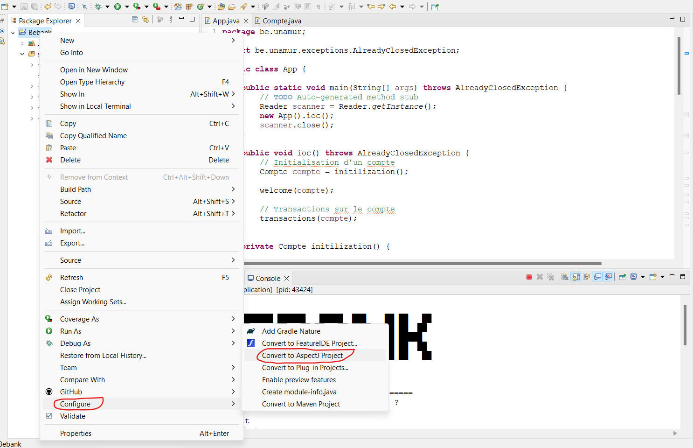
Et après vous avez dans l'Explorer:
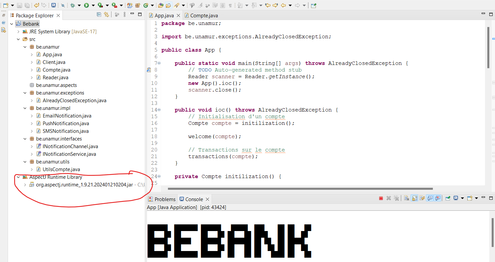
Nous allons pouvoir créer maintenant des aspects. Pour ce faire:
A faire
- Créer un aspect
WithoutAnnotationAspectetWithAnnotationAspectpour encapsuler les aspects de sécurité des transactions. Intercepter l'appel des méthodesdeposeretretireravant leur exécution.
Ancienne synthaxe de création¶
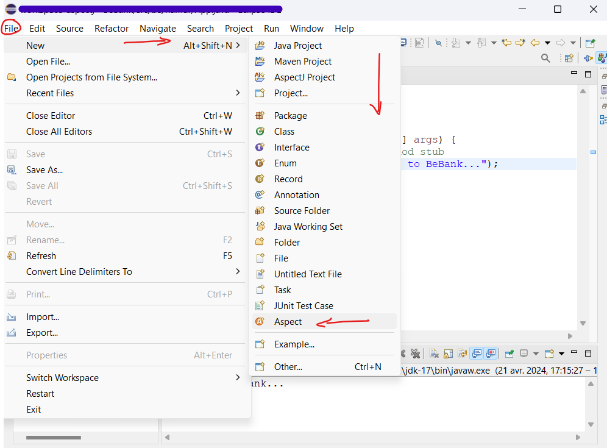
Voici le code source de l'aspect
Questions
Pour WithoutAnnotationAspect, vous devriez aboutir au résultat suivant. Quelles sont les informations que donne la Cross References View ?
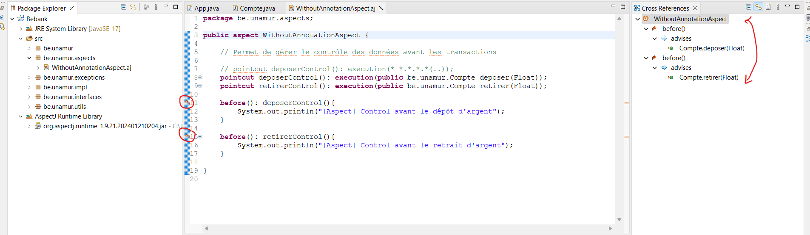
Résultat après exécution:
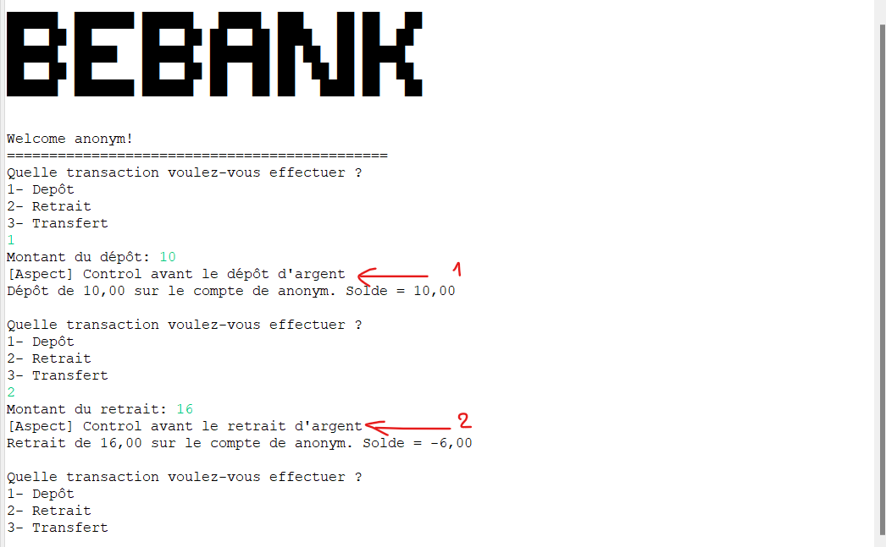
Création à l'aide d'annotations¶
A faire
- Créer l'aspect
WithAnnotationAspect. - Créer deux aspects permettant d'envoyer d'email et de SMS au client après l'opération de retrait. Pas besoin d'implémenter les fonctionnalités en question, faites juste des affichages en console.
Code source:
Résultat en console:
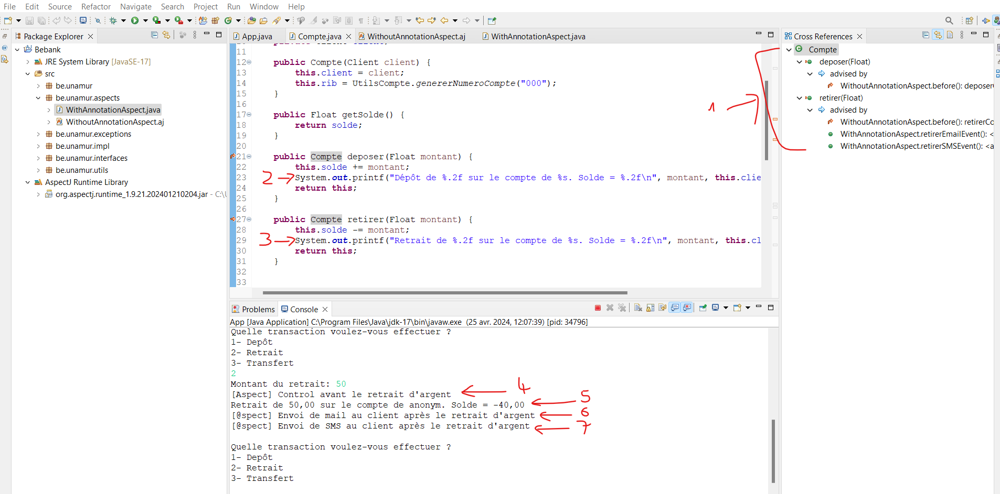
Pour la suite ...
Commentez les lignes 2 et 3 annotés sur l'image précédante et aussi annuler l'effet des aspects.
II- Manipuler un pointcut¶
Variable thisJoinPoint et Wilcards¶
Logging¶
A faire
- Séparer la préoccupation transversale de log du code métier en utilisant un aspect
LoggingAspectqui ne trace que les dépôts et les retraits en affichant en console l'identité du client, le montant de la transaction et le numéro de compte impliqués dans les transactions.
Code à manipuler:
Voici le résultat attendu:
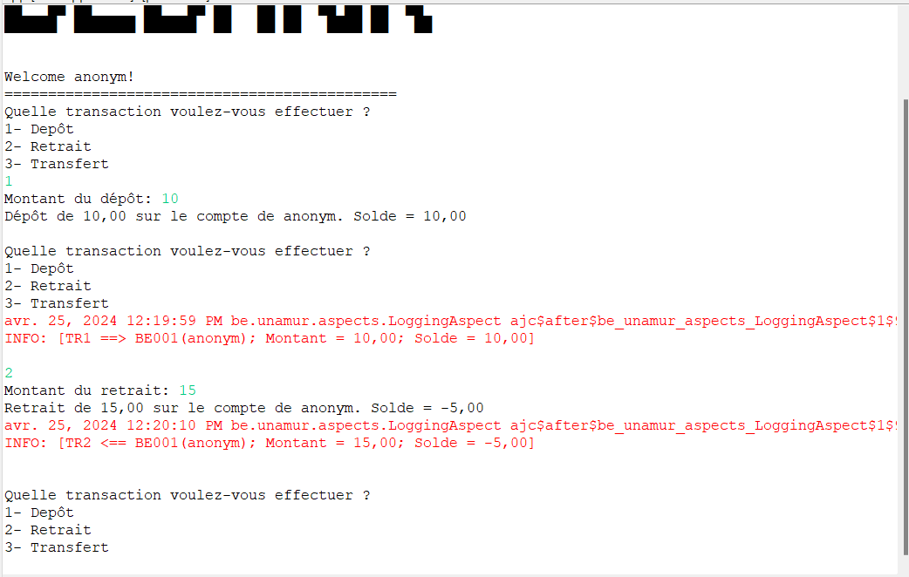
Questions
- Quelle est la différence entre les bouts de code suivants ? Astuce (Expliquer à l'aide du code)
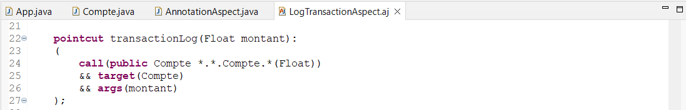
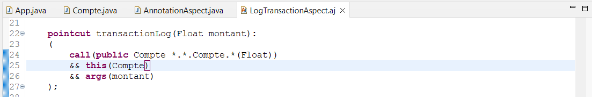
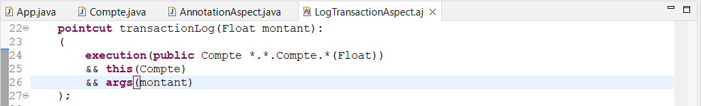
Solde non négatif¶
Vous auriez remarqué que des retraits négatifs sont possibles. Nous allons essayez d'y remédier avec un aspect.
Questions
- Vérifier le solde du compte avant de procéder à des opérations pour éviter les retraits négatifs. Créer un aspect
TransactionyAspect à base d'annotation.
Code de base:
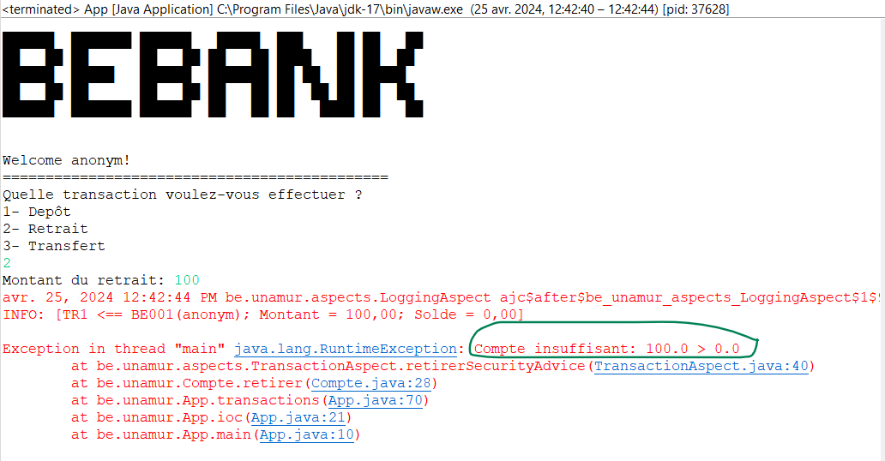
Précédence sans mécanisme AspectJ¶
A faire
- Nous remarquons dans la capture précédente que les logs s'effectuent avant le déclenchement de l'erreur, ce qui donne un comportement incohérent. Corriger cela en utilisant une variable
static volatile
Résultat attendu:
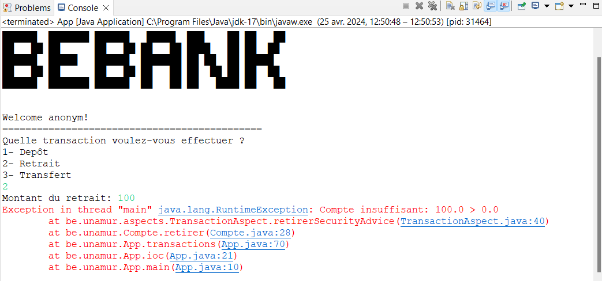
Nous allons à présent ajouter le mécanisme d'authentication.
Login with around¶
A faire
- Ajoutez le mécanisme de connexion avec un identifiant et un mot de passe
Code de base:
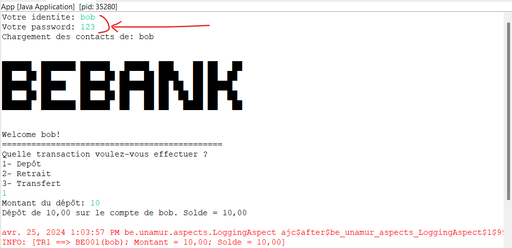
Changement du format rib¶
A faire
Changer le format pour un format "0000000000" quand l'authentification est effectuée.
Warning
Hypothèse: lorsque AuthenticationAspect est désactivé, tous les pointcuts le sont aussi.
Sans connexion:
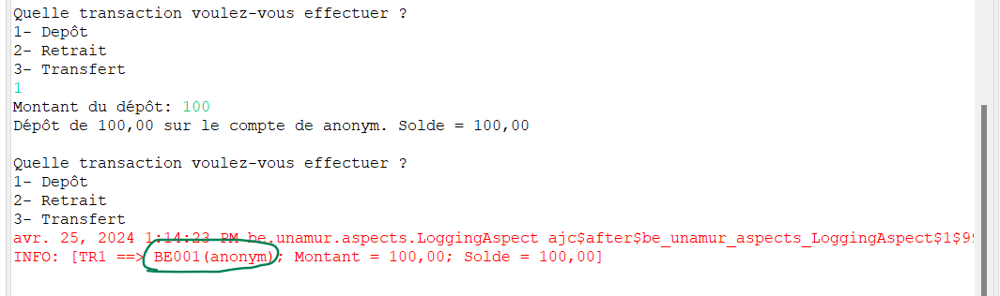
Avec connexion:
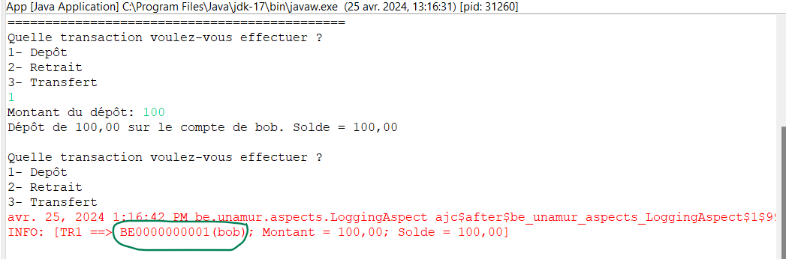
Vérification avant retrait¶
A faire
Ajoutez dans AuthenticationAspect la capacité de demander à l'utilisateur de s'identifier avant tout retrait, même les retraits au cours des transferts.
Résultat attendu:
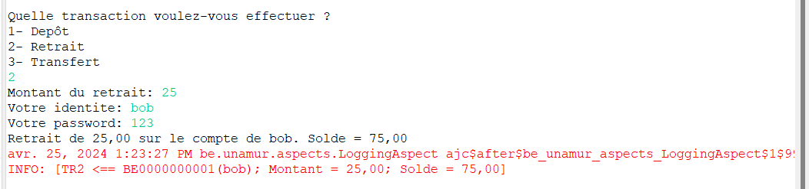
Warning
Pour la suite, ajouter ce bout de code dans TransactionAspect afin de suivre la propagation des erreurs dans les transactions et de réinitialiser la variable errorInTransaction sinon les logs ne s'afficheront plus après un transfert.
Problème:
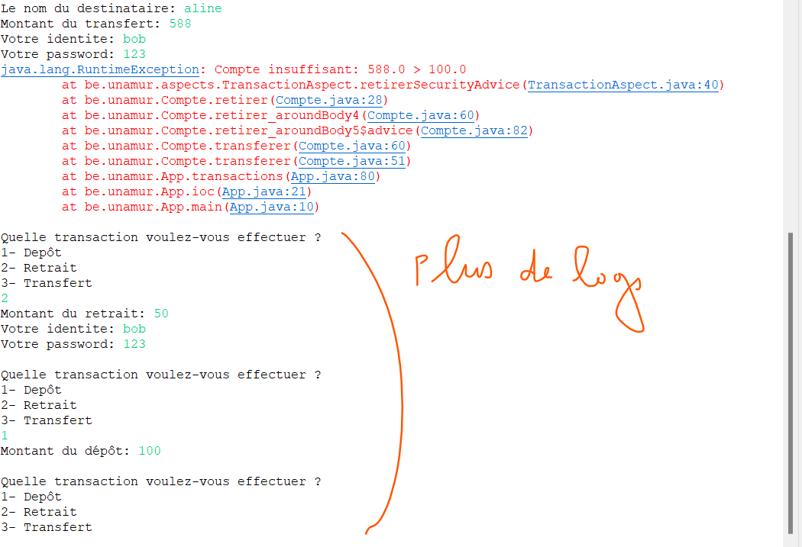
Code à ajouter dans TransactionAspect
Synchronization¶
Mettre à jour le solde du compte de manière atomique pour garantir l'intégrité des données. Astuce (Synchroniser les méthodes retirer, deposer, transferer). Ajoutez un poincut dans l'aspect TransactionAspect
Evitez le scénario suivant:
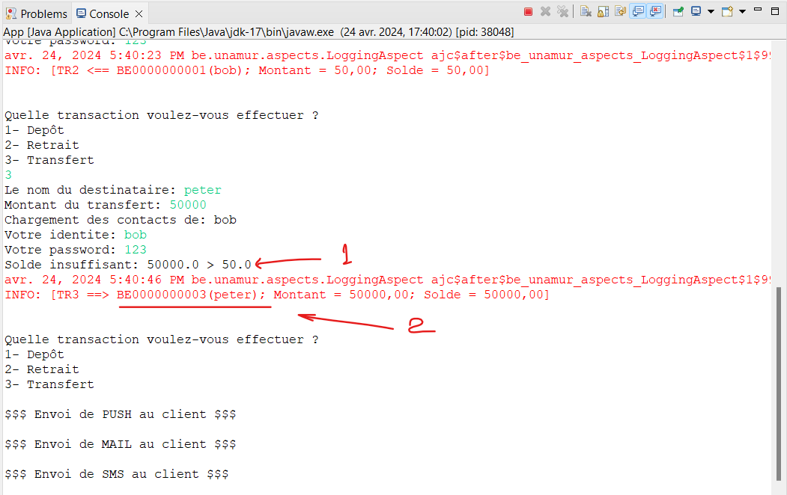
Pointcut Initialization et méchanisme d'introduction¶
A faire
Nous disposons de trois mécanismes de notification au client lors d'un dépôt sur son compte. Veuillez permettre au client de choisir le mécanisme qui lui convient et permettre l'extensibilité du code en conséquence avec l'aspect NotificationAspect.
Code de base:
Résultat attendu:
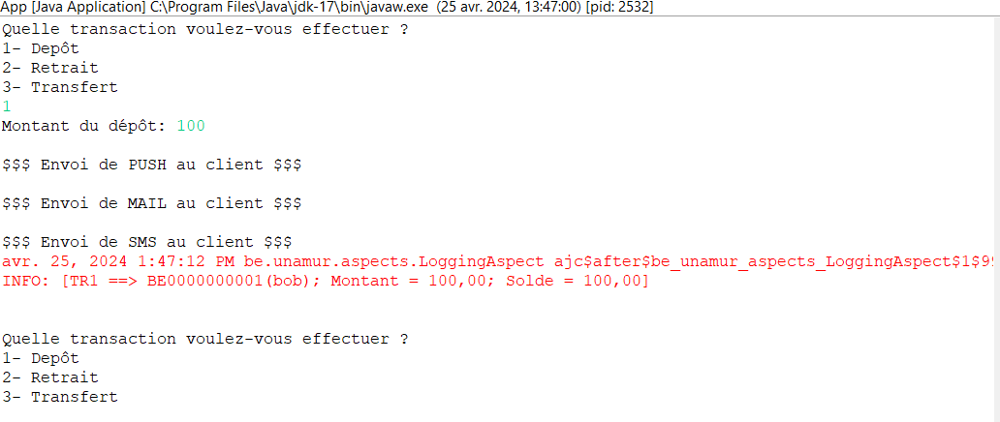
Optimisation et traitement parallèle¶
A faire
Afin d'alléger l'envoi des notification et de profiter des capacités hardware, tu es invité(e) à utiliser la programmation par aspect pour mettre en parallèle les tâches lourdes.
Code de base:
Résultat attendu:
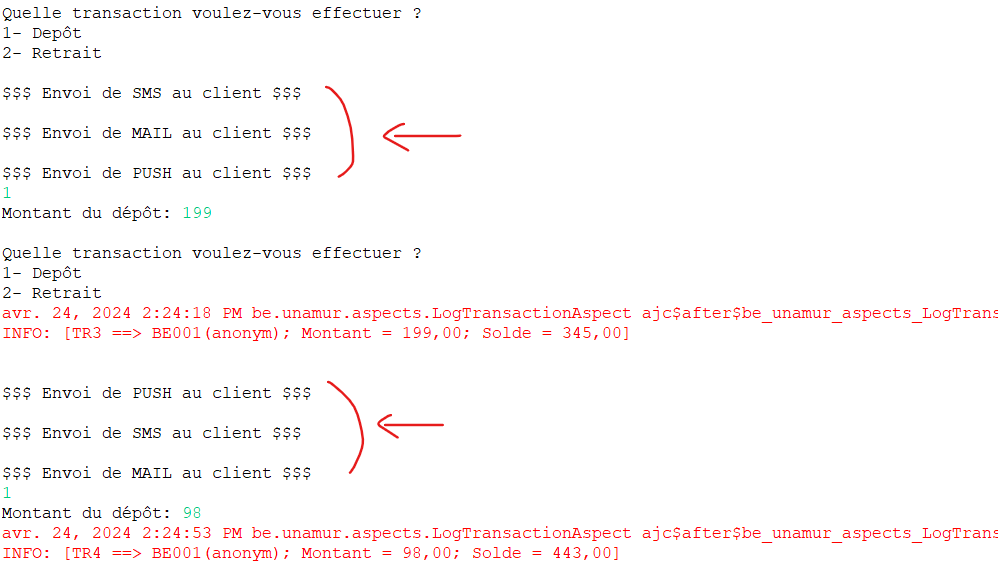
Questions
- Que remarquez-vous par rapport aux aspects
NotificationAspectetparallelTaskau vu de leur dépendance. Astuce (commentez l'un pour voir l'effet sur l'autre)
Problème de précédence 😬¶
🔥🔥🔥 Vous venez venez de remarquer que l'application donne une idée du maximum d'argent dans le compte du client avant de vérifier la légitimité de celui qui veut opérer le retrait. 🔥🔥🔥
Allez à la rescousse de Bebank sinon elle risque non seulement de fermer mais d'être aussi poursuivie. 🤠
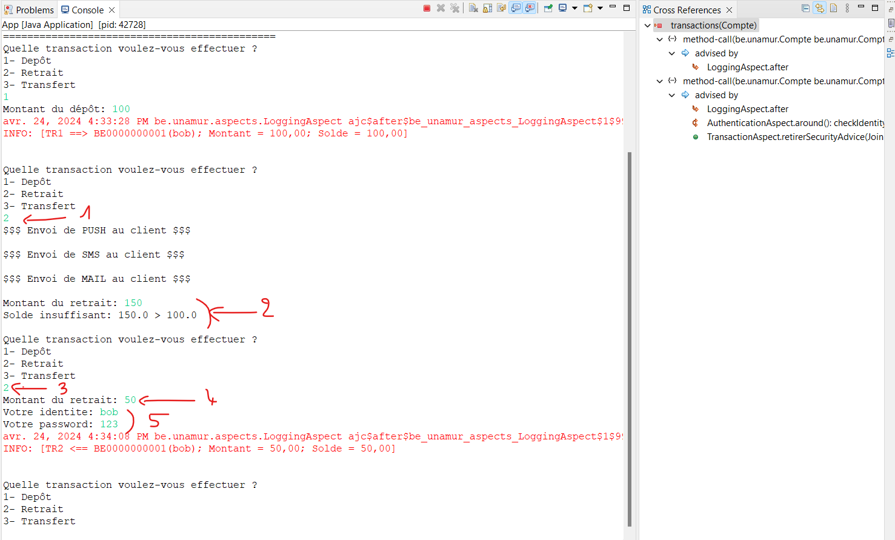
Résoudre le problème qui se pose en suivant les étapes ci-dessous:
A faire
- Trouver une manière de faire passer l'execution de l'aspect
AuthenticationAspectavant l'aspectTransactionAspectsur certains pointcuts.
Résultat attendu:
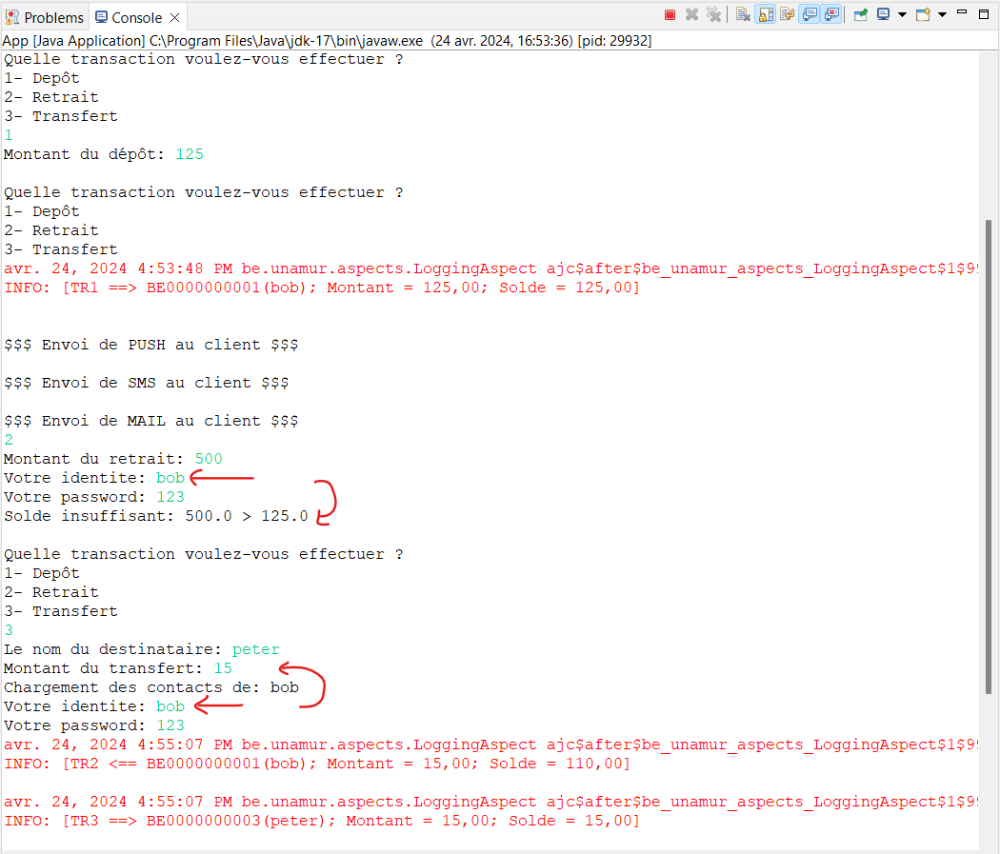